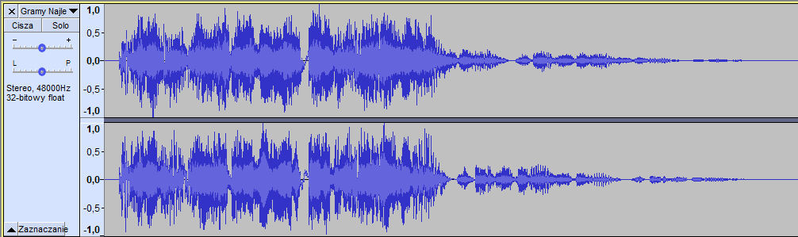
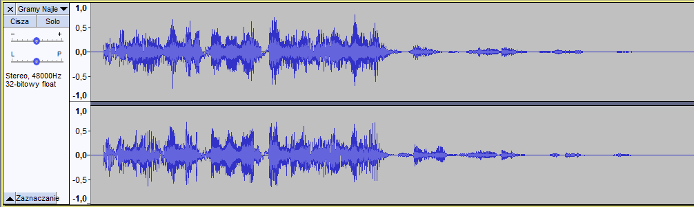
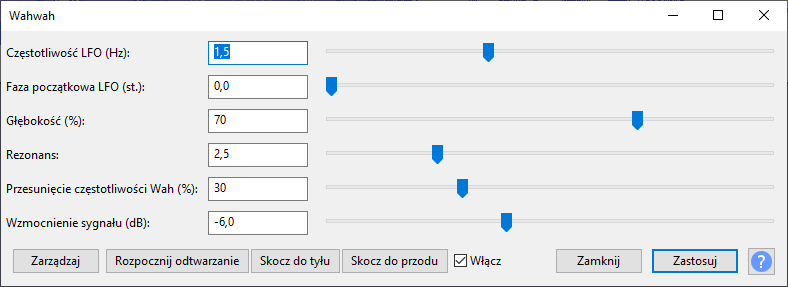

Dźwięk analogowy jest uważany za prawdziwą i dokładną reprezentację dźwięku nagranego w danym momencie. Jest to dokładny dźwięk zebrany przez urządzenie nagrywające, np. mikrofon. Nośniki analogowe to na przykład taśma magnetofonowa lub płyta gramofonowa.
Dźwięk cyfrowy to reprezentacja dźwięku zapisana w binarnej formie Taki zapis zawsze będzie gorszy od oryginału.
Aby dźwięk analogowy zapisać w postaci cyfrowej, należy poddać go trzem procesom:
Próbkowanie - pobieranie informacji na temat poziomu dźwięku i zapisanie go jako liczby
Kwantyzacja - przypisanie pobranym wcześniej próbkom odpowiedni poziom kwantyzacji
Kodowanie - zapis informacji w formie zer i jedynek
Wielkości charakteryzujące dźwięk:
Składowa
częstotliwość próbkowania
Wysokość dźwięku
Widmo dźwięku
Barwa dźwięku
Wzór na rozmiar pliku: częstotliwość próbkowania x liczba bitów x liczba sekund x liczba kanałów
Wahwah
Wahwah to efekt w programie Audacity służący do utworzenia "falującego" dźwięku. Przypomina to naprzemienne zasłanianie i odsłanianie ust podczas mówienia.
Tak wyglądała i brzmiała próbka dźwięku przed poddaniu ją efektowi Wahwah:

A tak po:

Parametry

Częstotliwość LFO - Ustawia prędkość, z jaką filtr przesuwa się
Faza początkowa LFO - Określa to, czy filtr zaczyna się od najniższyej, średniej czy najwyższej częstotliwości
Głębokość - Określa zakres częstotliwości, przez które filtr będzie przechodził. Wyższe wartości dają większą zmienność częstotliwości dźwięku w pełnym cyklu LFO. Niższe wartości dadzą bardziej stały efekt dźwiękowy
Rezonans - Określa stopień rezonansu
Przesunięcie częstotliwości Wah - Określa częstotliwość "bazową" filtra
Wzmocnienie sygnału - pozwala zwiększyć natężenie dźwięku